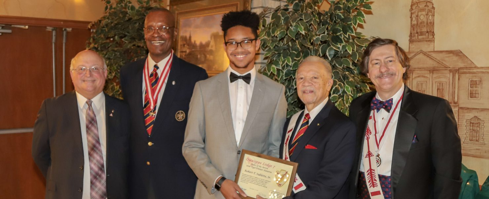

Robert Thomas Sublette was born in Chattanooga, Tennessee August 5, 1937 at home, to Lillian Benjamin (1900) and Frank Ellis Sublette (1897). The family moved to Chicago in the early 1940's and lived at 3010 W. Fulton Blvd.
Bob attended the Beidler Grammar School and was its first African American student; he was recruited by his peers for the track and baseball teams. He then attended and graduated from Crane Technical High School (all boys) in 1956.
Hearing the hail of the bugle at his Church at 50th and Wabash, Bob developed an immediate sense of calling to Scouting. He became a Cub Scout in Pack 3534 sponsored by St. Mark United Methodist Church (1947-1948). He first expressed interest in Boy Scouts around the age of 9 but was not old enough yet; instead he was recruited to be the troop mascot and with the Bugle Corp participated in multiple parades and other community events such as the Bud Billiken Parade.
